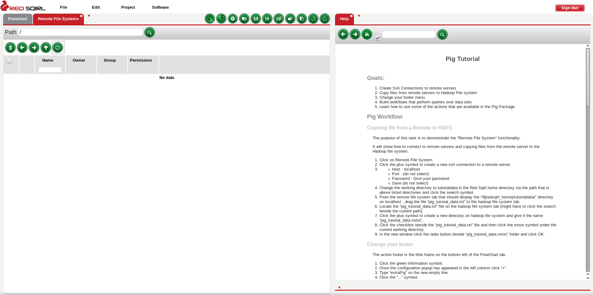
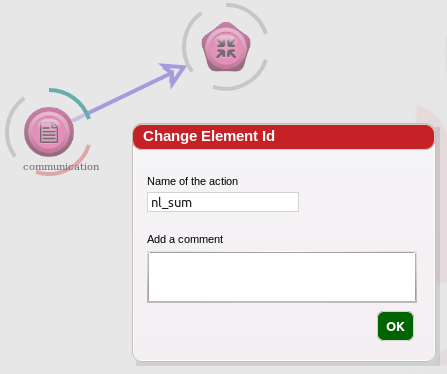

Pig Tutorial
Goals:
- Create Ssh Connections to remote servers
- Copy files from remote servers to Hadoop File system
- Build workflows that perform queries using multiple data sets
- Learn how to use some of the actions that are available in the Pig Package
Pig Workflow
Copying file from a Remote to HDFS
The purpose of this task is to demonstrate the 'Remote File System' functionality.
It will show how to connect to remote servers and copy files from the remote server to the Hadoop file system.
- Here is what your workspace should look like at the beginning of this tutorial.
- Next to Canvases, Click on the arrow down, and choose Remote File Systems.

- Go in Main Settings.
- Go to remotefs > host (left menu)
- Click the plus symbol and type “local” in the text box
- Click on local and fill out the host to be localhost, your user name and password (remove the private key file property)
- Click the Check button, you should get success.
- Leave Settings and refresh the Remote File Systems. You should see the local connection now.
- From the remote file system tab, you should navigate to '/${redsqirl_home}/tutorialdata/' directory. For example, Red Sqirl in this tutorial is installed in /local/usr/share/redsqirl
- Add the Hadoop File System tab, to the right, next to Help.
- Drag the file 'pig_tutorial_data.txt' to the hadoop file system tab.
- Click the plus symbol to create a new directory on hadoop file system and give it the name 'pig_tutorial_data.mrtxt'.
- Click the checkbox beside the 'pig_tutorial_data.txt' file and then click the move symbol under the current working directory.
- In the new window, click the radio button beside 'pig_tutorial_data.mrtxt' folder and click ok
Create a Workflow
Setup a Source Action
This task will show how the source 'action' can be configured to select flat files and change the properties such as the delimiter of the file and also the headings and types of the file.
- In the actions footer, drag a new Pig Text Source icon onto the canvas.
- Double click to open source.
- Name the action “communication“.
- Comment the action “Configure tutorial data“.
- Click ok.
- On the data set screen, click on the path field or on the button.
- Click on the radio button beside “pig_tutorial_data.mrtxt”
- Click ok.
- On the feature title line, click on the edit button.
- Once it appears choose “Change Header”
- Copy and paste “subscriber_number STRING , Friend STRING ,
offpeak_voice INT , offpeak_sms INT , offpeak_mms INT
,peak_voice INT,peak_sms INT , peak_mms INT , sna_weight INT ,
subscriber_onnet INT ,friend_onnet INT” into the value
field.
- Click ok. The user will have the confirmation that the header is correct.
- Click ok to exit from the configuration window.
- If the user hovers over the source action and hits ctrl, some configuration details will appear
- Save the Workflow by going into File > Save, name it
“pig_tutorial”. By default it is saved in redsqirl-save HDFS
directory and the file will have the extension ‘.rs’. Click ok
to save.
Setup nl_sum Action
Pig Aggregator is an action in which aggregation methods are allowed to be
used when selecting columns as you would in an sql statement. These
aggregation methods are AVG , MAX , SUM etc. This action will group by either
the selected attributes or all (default if none is selected).
- Drag a pig aggregator action to the
canvas.
- Create a link between the source that was just configured and the new
pig aggregator action by clicking between the image and the arc of the
source action and then clicking on the pig aggregator image.
- Open the new pig aggregator click, name the element “nl_sum”
and Click ok.

- Select
“subscriber_number” and click "Select" in the Group by
interaction.
- Click next.
- Select the copy from the dropdown menu
on the generator interaction and click ok.
- On the top of the table click the
“+” symbol to add a new row to the
table.
- Click on the pen in Operation field of the new
row and click the “SUM()” function and add the
parameters “offpeak_voice” and
“peak_voice”. In between the parameters add a
“+” symbol so that the operation would read
“SUM(offpeak_voice + peak_voice)”

- click ok.
- In the Field Name, type
“total_voice” for the new column and change
the type to DOUBLE.
- Click ok.
- In “Project” menu on the top, click “Save and Run” to run the workflow.
- To see the results, hover over the action “nl_sum” and click ctrl, > Options > Data
Output.
- You can close it by clicking “Cancel” or “ok”
Setup comm_groupbyall Action
- Drop another pig aggregator onto the
canvas.
- Make a link between the source and the new pig aggregator.
- Open it, and give it the name "comm_groupbyall" and click ok.
- This time leave the group by list alone so nothing is selected and click
next.
- Create a new row (+ button).
- In this new row copy and paste “AVG(offpeak_voice +
peak_voice)”.
- Call the field “total_voice_avg” and select the DOUBLE type.
- Click bottom right ok button.
Perform a Pig Join Action
To make each dataset interactable with each other it is necessary to
perform a join on them.
- Drop a pig join onto the canvas.
- Create a link from “comm_groupbyall” to the new
pig join action.
- Create a link from “nl_sum” to the new
pig join action.
- Double click the pig join and call it “nl_vs_total”.
- The first page list the table aliases, click next.
- On the following page, make sure that “copy” is selected as
the generator and click ok.
- Click next.
- This page has two interactions that
specify the join type and the fields to join on, we use the
default join type which is “Join” so this does not
need to be changed.
- In “Join Field” column, type “1” in the two rows. This condition will join
the two tables together.
- Click ok.
Filter a Data set
Now we want to make a condition to see what subscribers have a higher
total voice calls than the average of the entire dataset. The easiest would be
to add the condition in Join but we will create a new select for demonstration
purposes.
- Drop a new pig filter action onto the canvas.
- Create a link from the pig join action
to the new pig select action
- Open it and change the element id to be “high_voice”.
- Write 'nl_sum_total_voice > comm_gball_total_voice_avg' in the text box
- Click ok.
- Cache 'nl_vs_total' intermediate result before running the workflow. Select 'nl_vs_total' and go into the top menu Edit > Output State > Buffered.
- On the top menu, go in Project > Save and Run, and see the results in the data output of 'nl_vs_total' and 'high_voice'.
- If the user won’t reuse the canvas or its data anymore, it is always recommended to clear the cache data. the data can be cleaned by clicking on 'Select All' and then 'Clean Actions' in the 'Edit' top menu.

Summary of workflow
In this workflow we have
- Configured source for a hdfs file
- Selected the sum of two columns
- Calculated the average of a column
- Calculated the sum of a column when grouped
- Joined two tables
- Filtered a table